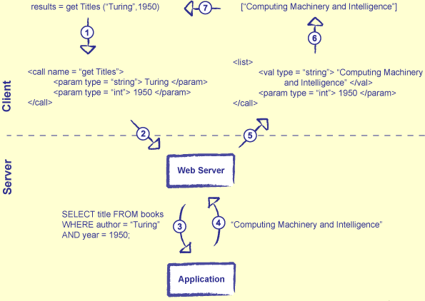

1) Introduction
The Internet is changing everything
Distributed programs are different from unitary ones
Distributed teams work differently from collocated ones
This lecture looks at how to build programs that get data from the web
Providing data securely is a much harder topic
If you want to know more, see [Goerzen 2004]
2) You Can Skip This Lecture If...
You know what TCP and DNS stand for
You know what a socket is
You know how HTTP requests and responses are formatted
You know how to append parameters to a URL
You know what screen scraping is, and why you shouldn't do it
3) Small Pieces, Loosely Joined
The Unix command line was the world's first component object model
Programmers build small pieces, then connect them in arbitrary ways
Key features:
Low cost of entry: it's easy to add one more tool to the toolbox
Common data format: stream of strings
Common communication protocol: stdin, stdout, and zero/nonzero exit codes
The Web grew so quickly because it replicated these strengths
Everything used HTML (data format) over HTTP (communication protocol)
4) Distributed Is Different
Distributed systems are fundamentally different from unitary systems
Small programs (like the ones in this lesson) can ignore these differences...
...but every industrial-strength application eventually has to deal with them
Difference #1: concurrency
As in databases, means "several things happening at once"
Can lead to:
Deadlock : A is waiting for B while B is waiting for ARace condition : final result depends on whether A or B goes last
5) Partial Failure
Difference #2: partial failure
One component fails while others are still healthy
If you've waited five seconds for a web site to respond, should you assume that it's down, or keep waiting?
Both differences make distributed applications much harder to debug than unitary ones
Often have heisenbugs (which only appear intermittently)
And it's usually impossible to get a complete picture of the system's state
Only way to get a distributed system right is to build it right in the first place
7) Sockets
Using IP, processes communicate through sockets
Each socket is one end of a point-to-point communication channel
Provides the same kind of read and write operations as files
The socket's host address identifies a machine
Consists of four 8-bit numbers, like "24.153.22.195"
The Domain Name System (DNS) gives these symbolic names like "www.third-bit.com"
Use nslookup to talk to DNS directly
The socket's port is just a number in the range 0-65535
0-1023 are reserved for the operating system's use
8) Client/Server vs. Peer-to-Peer
A client/server architecture is one in which many clients communicate with a central server
A peer-to-peer architecture is one in which all processes exchange information equally
Symmetric: every participant both provides and receives data
Client/server architectures are simpler to create
But if the server fails, the whole system fails
9) Socket Client
import sys, socket
buffer_size = 1024 # bytes
host = '127.0.0.1' # local machine
port = 19073 # hope nobody else is using it...
message = 'ping!' # what to send
# AF_INET means 'Internet socket'.
# SOCK_STREAM means 'TCP'.
sock = socket.socket(socket.AF_INET, socket.SOCK_STREAM)
sock.connect((host, port))
# Send the message.
sock.send(message)
# Receive and display the reply.
data = sock.recv(buffer_size)
print 'client received', `data`
# Tidy up.
sock.close()
client received 'pong!'
10) Socket Server
import sys, socket
buffer_size = 1024 # bytes
host = '' # empty string means 'this machine'
port = 19073 # must agree with client
# Create and bind a socket.
s = socket.socket(socket.AF_INET, socket.SOCK_STREAM)
s.bind((host, port))
# Wait for a connection request.
s.listen(True)
sock, addr = s.accept()
print 'Connected by', addr
# Receive and display a message.
data = sock.recv(buffer_size)
print 'server saw', str(data)
# Replace vowels in reply.
data = data.replace('i', 'o')
sock.send(data)
sock.close()
Connected by ('127.0.0.1', 1297)
server saw ping!
11) The Hypertext Transfer Protocol
Figure 23.2: HTTP Request Cycle
The client sends a request specifying what it wants
The server sends the contents of the file in reply
HTTP is a stateless protocol
Server doesn't remember anything between requests
Every image in a web page must be requested and downloaded separately
13) Headers
An HTTP header is a key/value pair
"Accept: text/html""Accept-Language: en, fr""If-Modified-Since: 16-May-2005"
Unlike a dictionary, a key may appear any number of times
So a request can specify that it's willing to accept several types of content
14) Body
The body is any extra data associated with the request
Used with web forms, to upload files, etc.
Must be a blank line between the last header and the start of the body
Signals the end of the headers
Forgetting it is a common mistake
The "Content-Length" header tells the server how many bytes to read
Note: there's no magic in any of this
An HTTP request is just text---any program that wants to can create them or parse them
15) HTTP Response
Figure 23.4: HTTP Response
HTTP version, headers, and body have the same form, and mean the same thing
Status code is a number indicating what happened
200 for "everything worked", 404 for "page not found"
Status phrase repeats that information in a human-readable phrase (like "OK" or "not found")
16) HTTP Response Codes
Code
Name
Meaning
100
Continue
Client should continue sending data
200
OK
The request has succeeded
204
No Content
The server has completed the request, but doesn't need to return any data
301
Moved Permanently
The requested resource has moved to a new permanent location
307
Temporary Redirect
The requested resource is temporarily at a different location
400
Bad Request
The request is badly formatted
401
Unauthorized
The request requires authentication
404
Not Found
The requested resource could not be found
408
Timeout
The server gave up waiting for the client
500
Internal Server Error
An error occurred in the server that prevented it fulfilling the request
601
Connection Timed Out
The server did not respond before the connection timed out
Table 23.1: HTTP Response Codes
17) HTTP Example
Fetch a page from the course site
import sys, socket
buffer_size = 1024
HttpRequest = "GET /greeting.html HTTP/1.0\n\n"
sock = socket.socket(socket.AF_INET, socket.SOCK_STREAM)
sock.connect(('www.third-bit.com', 80))
sock.send(HttpRequest)
response = ''
while True:
data = sock.recv(buffer_size)
if not data:
break
response += data
sock.close()
print response
HTTP/1.1 200 OK
Date: Fri, 03 Mar 2006 18:12:55 GMT
Server: Apache/2.0.54 (Debian GNU/Linux)
Last-Modified: Fri, 03 Mar 2006 18:12:23 GMT
Content-Length: 92
Content-Type: text/html
<html>
<head><title>Greeting Page</title></head>
<body>
<h1>Greetings!</h1>
</body>
</html>
Note: the double parentheses in the call to sock.connect are deliberate
Method's argument is a (host, port) tuple
18) Fetching Pages
Opening sockets, constructing HTTP requests, and parsing responses is tedious
So most languages provide libraries to do the work for you
In Python, that library is called urllib
urllib.urlopen(URL) does what your browser would do if you gave it the URL
Parse it to figure out what server to connect to
Connect to that server
Send an HTTP request
Returns an object that looks like a file, from which to read response data
19) urllib Example
import urllib
instream = urllib.urlopen("http://www.third-bit.com/greeting.html")
lines = instream.readlines()
instream.close()
for line in lines:
print line,
Note: readlines wouldn't do the right thing if the thing being read was an image
Might try to convert "line endings"
Use read to grab the bytes in that case
20) Building A Spider
A web spider is a program that can explore the web on its own
Fetch a page, extract all the external links, visit those pages...
import sys, urllib, re
url = sys.argv[1]
instream = urllib.urlopen(url)
page = instream.read()
instream.close()
links = re.findall(r'href=\"[^\"]+\"', page)
temp = set()
for x in links:
x = x[6:-1] # strip off 'href="' and '"'
if x.startswith('http://'):
temp.add(x)
links = list(temp)
links.sort()
for x in links:
print x
$ python spider.py http://www.google.ca
http://groups.google.ca/grphp?hl=en&tab=wg&ie=UTF-8
http://news.google.ca/nwshp?hl=en&tab=wn&ie=UTF-8
http://scholar.google.com/schhp?hl=en&tab=ws&ie=UTF-8
http://www.google.ca/fr
21) Passing Parameters
Sometimes want to provide extra information as part of a URL
Example: when searching on Google, have to specify what the search terms are
Could do this as part of the URL
Amazon puts ISBNs in URLs
More flexible to add parameters to the URL
http://www.google.ca?q=Python searches for pages related to Python"?" separates the parameters from the rest of the URLIf there are multiple parameters, they are separated from each other by "&"
E.g., http://www.google.ca/search?q=Python&client=firefox
22) Special Characters
What if you want to include "?" or "&" in a parameter?
Same problem (and solution) as including a quote in a string, or <> in XML
URL encode special characters using "%" followed by a 2-digit hexadecimal code
And replace spaces with "+"
Character
Encoding
"#"%23
"$"%24
"%"%25
"&"%26
"+"%2B
","%2C
"/"%2F
":"%3A
";"%3B
"="%3D
"?"%3F
"@"%40
Table 23.2: URL Encoding
23) Encoding Example
To search Google for "grade = A+", use http://www.google.ca/search?q=grade+%3D+A%2B
urllib has functions to make this easy
urllib.quote(str) replaces special characters in str with escape sequencesurllib.unquote(str) replaces escape sequences with charactersurllib.urlencode(params) takes a dictionary and constructs the entire query parameter string
import urllib
print urllib.urlencode({'surname' : 'Von Neumann', 'forename' : 'John'})
surname=Von+Neumann&forename=John
24) Screen Scraping (And Why Not)
Suppose you want to write a script that actually does search Google
Construct a URL: easy
Send it and read the response: no problem
Parse the response: there's a lot of junk on the page...
Many first-generation web applications relied on screen scraping
"Parse" the HTML with regular expressions
Hard to get right if the page layout is complex
And whenever the layout changes, the application breaks
25) Web Services
Modern web services separate data from presentation
When a client sends a request, it indicates that it wants machine-readable XML, rather than human-readable HTML
Much easier to parse
Much less likely to change over time
Many web services use the Simple Object Access Protocol (SOAP) standard
Despite its name, it's anything but simple
Luckily, there are libraries to hide the details for most widely-used web services

Figure 23.5: Web Services
26) Example: Amazon
Amazon has defined an API for web services
You need to get a license key in order to use it
They're free
But they allow Amazon to throttle requests to one per second per client
[PyAmazon] turns parameters into URL, and converts the XML reply into Python objects
import sys, amazon
# Display author's name nicely.
def prettyName(arg):
if type(arg) in (list, tuple):
arg = ', '.join(arg[:-1]) + ' and ' + arg[-1]
return arg
if __name__ == '__main__':
# Get information.
key, asin = sys.argv[1], sys.argv[2]
amazon.setLicense(key)
items = amazon.searchByASIN(asin)
# Display information.
for item in items:
productName = item.ProductName
ourPrice = item.OurPrice
authors = prettyName(item.Authors.Author)
print '%s: %s (%s)' % (authors, productName, ourPrice)
$ python findbook.py 123ABCDEFGHIJKL4MN56 0974514071
Greg Wilson: Data Crunching : Solve Everyday Problems Using Java, Python, and more. ($18.87)
27) Summary
Most computers now spend more time communicating than they do calculating
Every few years, we put another layer on top of the pile of protocols to make communication easier
TCP to HTTP to web services to...?
Getting information from the web is now (almost) as easy as getting it from a file
See in the next lecture how to provide information to others